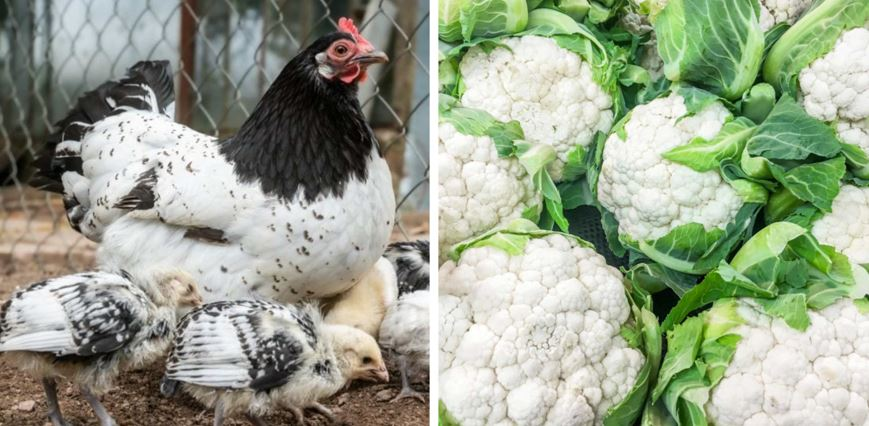

Can chickens eat cauliflower? The Truth
Cauliflower can be an excellent scrap to use every now and then for your chicken. In this post, we will be having a look at the dietary advantages, along with how you can feed it securely. You'll likewise find a few of the leading foods to prevent so make sure to keep reading till the very end! They can eat it as part of a nutritionally, well balanced diet plan. Cauliflower can be provided to chickens either prepared or raw and chickens can consume both the leaves and the head. The head of the cauliflower is known as the florets. Cauliflower is high in minerals and low in calories. Cauliflower is a healthy food for chickens. Cauliflower includes almost every mineral a chicken requires to be very healthy consisting of, calcium, iron, vitamin B-6 and vitamin C. The calcium material in cauliflower, whilst not especially high, is most certainly of terrific advantage to laying hens in specific.
Can Chickens Consume Cauliflower? Is This Veggie A Safe Scrap?
Feeding your chickens a healthy balance of healthy foods is unquestionably crucial to guaranteeing their ideal health and wellness. Naturally, there might be some concerns about what foods can be used to chickens as part of their diet plan, consisting of some of the more typical veggies.
Is Cauliflower Healthy for Chickens?
Similar to anything, cauliflower in small amounts can be thought about healthy for your chickens. Chickens should not be fed a diet plan that just consists just of cauliflower, or veggies for that matter. Rather, cauliflower ought to be contributed to offer additional nutrition and range. There are unquestionably advantages that can be gotten from the minerals and vitamins in cauliflower however it is likewise essential to provide your chicken a variety of various foods to motivate and promote their optimum health form a dietary viewpoint.
How To Feed Chickens Cauliflower
Chickens can consume raw or prepared cauliflower. It is best to provide plain boiled cauliflower if you are believing about offering your chickens prepared cauliflower. Make sure you to it cool prior to serving. Give your chickens cauliflower together with their routine feed. Whenever you prepare cauliflower for a meal, you can put aside the leafy parts of the plant that you are not utilizing for chicken feed. These leafy parts are a terrific alternative to tossing them away or composting them. Make sure to get rid of any left-over fresh veggies at the end of every day from your chicken's coop to prevent them decomposing. If you do jot do this, then they will trigger excess odor or bring in vermin.
Can Chickens Consume Cauliflower Plant Leaves Too?
When we consume cauliflower, mainly, we will choose to consume the white florets, nevertheless it is healthy and completely safe to eat the leaves and stem too. The very same can be stated for chickens! Due to the reality that usually chickens tend to especially delight in cauliflower-- there are not likely to be lots of leftovers! Chickens can consume cauliflower as part of a nutritionally well balanced diet plan. Cauliflower can be provided to chickens either raw or prepared and chickens can consume both the head (florets) and the leaves. Chickens can consume raw or prepared cauliflower. If you want to offer your chickens prepared cauliflower, it is best to provide plain boiled cauliflower.
Some ideas of food for your chicken
My birds are free range (except at night of course). What I have done is dedicated some planting beds in their area to growing fodder for them. I plant a mix of barley, buckwheat, clover, rye, borage and amaranth seed. I placed some chicken wire over the planting box right after planting so the fodder grew right through it. That way, when they scratch around they don’t tear up all the plants. I also purchase a 5 grain scratch at the feed store. During the winter, I buy dried meal worms or soldier fly larva. This gets them the protein they miss from fewer bugs in the winter. Another wonderful treat that they just love is scrambled eggs. If I have too many eggs, I will float the eggs for freshness(explanation at the end of the answer) to see which are getting too old to eat. The eggs that are still good but getting to the end of their shelf life, get scrambled and cooked with no seasonings. I then crush up the shells and add them to the mix. If I have some produce that is getting soggy I will chop that up and at it too. The hens go crazy for this. To float eggs for freshness: Fill a deep bowl or the sink with cool water. Place questionable eggs in the water. The eggs that float to the top are bad and should be thrown away. The eggs that are on their sides at the bottom are the freshest. The eggs that “stand on their heads” (meaning the blunt end of the egg floats up but the tapered end of the egg is still touching the bottom) or float at an angle, are getting to the end of their shelf life and should either be consumed within the next day (in baking or hard cooked) or or gifted to the hens.
Conclusion
We have gone over the question of whether or not your dog can eat bacon and can bacon kill dogs among other questions. After reading this blog posts, there should be a firm understanding of why feeding your dog bacon would be a bad idea. There are many other alternatives to feeding your dog bacon and I know your dog will love them too. Alternatives such as vegetables or certain types of dog treats are tasty and healthy at the same time.